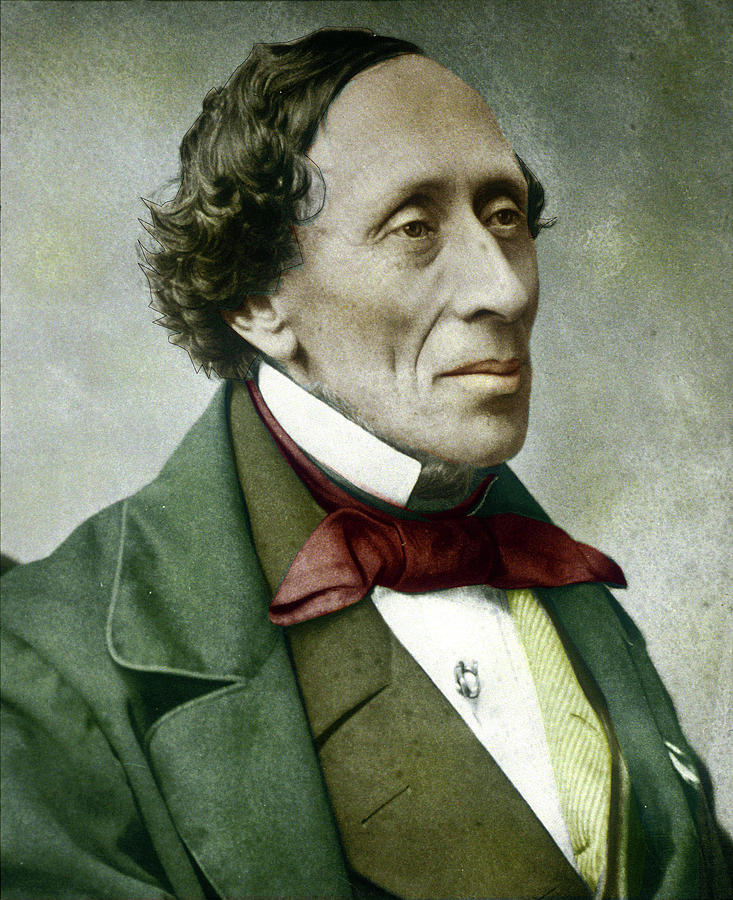
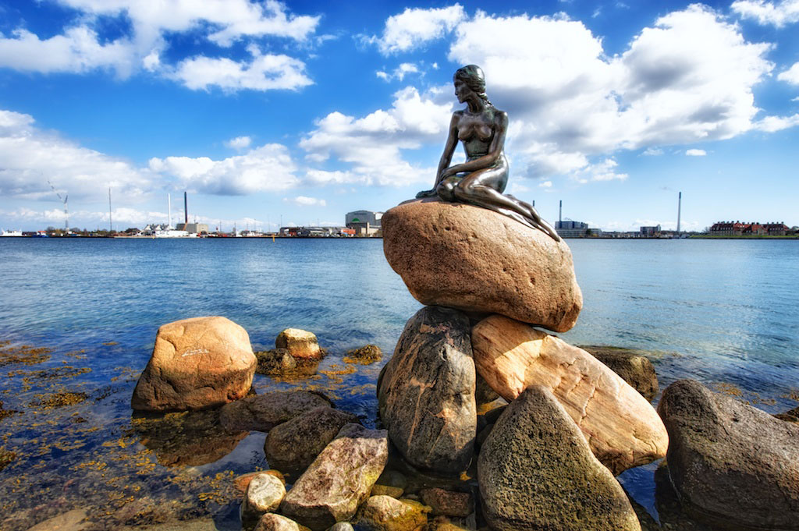

|
|
|
|
Cultură |
|

Danemarca este o țară
cu o cultură bogată, ce se remarcă prin
realizări științifice și culturale. Probabil cel mai faimos danez
este de fapt un personaj literar englez: Hamlet, personajul
piesei cu același nume de William Shakespeare, al cărui decor
este castelul real Kronborg în Helsingør, la nord de
Copenhaga.
Un alt danez binecunoscut este Hans Christian Andersen
(1805–1875), un autor cunoscut mai ales pentru poveștile sale
pentru copii, precum "Noile straie ale împăratului", "Mica sirenă",
și "Rățușca cea urâtă".
Descoperirile astronomice ale lui Tycho Brahe (1546–1601), enunțarea
de către Ludwig A. Colding (1815–1888) a principiului conservării energiei,
inițial neglijată, precum și contribuțiile lui Niels Bohr (1885–1962) în
domeniul fizicii atomice dovedesc gama largă de realizări științifice ale
danezilor.
Eseurile filosofice ale lui Søren Kierkegaard (1813–1855), povestirile
lui Karen Blixen (sub pseudonimul Isak Dinesen), (1885–1962), piesele
de teatru ale lui Ludvig Holberg (1684–1754), autorii moderni cum ar fi
Herman Bang și laureatul Premiului Nobel Henrik Pontoppidan, precum și
poezia densă și aforistică a lui Piet Hein (1905–1996), au adus țări recunoaștere
internațională.
După jumătatea anilor 1990, filmele daneze au atras atenția lumii,
în special cele asociate cu Dogme 95, ca cele ale lui Lars Von Trier,
Thomas Vinterberg, Søren Kragh-Jacobsen și Lone Scherfig, culminând cu
câștigarea premiului Oscar pentru cel mai bun film străin, In a Better
World, în 2011. Cele mai de succes seriale au fost Borgen și Forbrydelsen.
Cel mai cunoscut compozitor danez de muzică clasică este Carl Nielsen.
Printre cele mai cunoscute formații se numără Aqua, D-A-D, The Raveonettes,
Michael Learns to Rock, Alphabeat, Medina, Oh Land, Kashmir și Mew. Lars
Ulrich, bateristul formației Metallica, a devenit primul muzician danez
introdus în Rock and Roll Hall of Fame.

(Mica sirenă, Danemarca, Copenhaga)
Copenhaga este centrul mai multor atracții, între care Grădinile Tivoli,
Palatul Amalienborg (palatul familiei regale daneze), Palatul Christiansborg,
Catedrala din Copenhaga, Castelul Rosenborg, Opera, Biserica lui Frederik
(Biserica de Marmură), Muzeul Thorvaldsens, Rundetårn, Nyhavn și Mica
Siernă.
|
Elemente cheie |
|
Descrierea culturii daneze este un studiu în sine,
dar iată câteva elemente cheie
pe care ar fi frumos să le cunoașteți despre danezi.
Conform legislației daneze, bărbații și femeile au aceleași drepturi
și șanse, iar aceștia sunt tratați în mod egal la locul de muncă, în familie
și în societate. De asemenea, este esențial faptul că bărbații și femeile
primesc același salariu pentru aceeași activitate. Mai mult, un angajator
nu are permisiunea de a prefera un gen în defavoarea celuilalt, când se
eliberează o funcție.
Danezii pot părea nepoliticoși, dar acest lucru se întâmplă pur și
simplu, deoarece danezii sunt foarte direcți. Aceștia spun ce gândesc
și, uneori, acest lucru este interpretat greșit ca lipsă de politețe.
Cuvântul danez pentru „te rog” este utilizat rareori, chiar dacă, în general,
danezii sunt extrem de politicoși.
Danezii sunt deosebit de punctuali și acestora le place să ajungă
la timp, așa că dacă lucrați pentru danezi, încercați mereu să ajungeți
la timp, mai ales dacă aveți o ședință sau o întrunire cu un danez.
Danemarca este o țară prietenoasă cu bicicletele, iar bicicleta este
un mijloc de transport către locul de muncă extrem de frecvent, dar și
în timpul liber. În Danemarca, bicicletele pot fi văzute peste tot, în
special în orașele mari. Fiți atenți când coborâți din autobuz; verificați
pista de biciclete, pentru a nu fi călcați.
Religia predominantă din Danemarca este creștin-protestantă. Aproximativ
75% din toți danezii sunt membri ai Bisericii evanghelice-luterane a
Danemarcei. În Danemarca, religia este practicată normal într-o manieră
relaxată, în cadrul căreia mulți danezi participă la serviciul religios
numai în Ajunul Crăciunului (24 decembrie) și în alte ocazii speciale.
Hygge este cuvântul danez pentru un sentiment de confort și stare
de bine. Este greu de descris o definiție exactă, întrucât fiecare persoană
îl înțelege în mod diferit, dar acesta joacă un rol major în înțelegerea
culturii daneze.
Umorul danez poate fi foarte sec și sarcastic. Datorită simțului
puternic danez de (auto)-ironie, acesta poate fi uneori destul de greu
de înțeles de străini. Cu toate acestea, în general, danezilor le place
să facă glume.
Un prânz danez tradițional constă deseori în sandvișuri de secară
cu pate de ficat, hering marinat sau mezeluri reci din carne de porc. Carnea
de porc nu numai că este un bun de export major pentru Danemarca, dar
este consumată în cantități mari și acasă, iar friptura de porc este populară
îndeosebi de Crăciun. Mai mult, danezilor le plac și dulciurile și adoră
în special lemnul dulce-sărat.
Danezii sunt un popor foarte activ și adoră sporturile de orice fel,
atât ca spectatori, cât și ca participanți. Fotbalul este sport național
în Danemarca și sportul cu cei mai mulți jucători, dar în rândul danezilor
sunt populare și handbalul, înotul, golful și ciclismul.
|
|
|
|
|
|
{kind=link}
{kind=link}